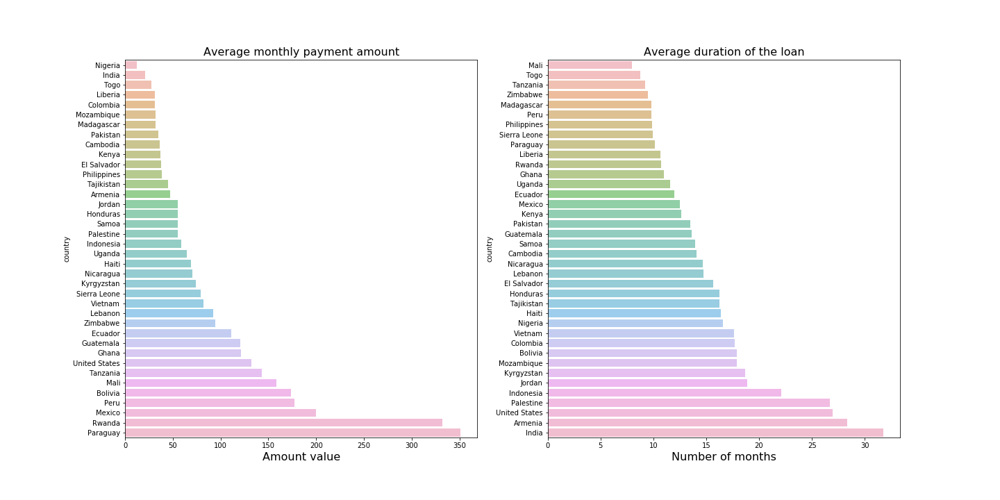

Intro
Kiva.org is an online crowdfunding platform to extend financial services to poor and financially
excluded people around the world. Kiva lenders have provided over $1 billion dollars in loans to over
2 million people. Kiva wants to build more localized models to estimate the poverty levels of
residents in the regions where it has active loans; they need help building models for assessing
borrower welfare levels. Full exploratory data analysis here.
Task
Enable Kiva to estimate the welfare level of borrowers in specific regions, based on shared economic and demographic characteristics, on as granular a level as possible. Connect the features of each loan or product to one of several poverty mapping datasets.
Tools and Methodology
Used Oxford’s global Multidimensional Poverty Index (MPI) databank for poverty and wrote a script that
scrapped geographic data from Google Maps for the borrowers addresses. This way, I mapped loan data
with borrower and administrative region data. Exploratory data analysis uses statistics and
visualization techniques created with Python libraries (numpy, panda, stats, scipy, geopandas,
matplotlib, plotly). This project took 3 months.
Key findings
General
- Kiva actually has more loans in regions with lower MPI compared to regions with higher MPI.
- Only 1% of the loans funded don't go through a field partner. The direct borrowers were from Kenya and US.
- Most of the loans are between 100$ and 600$. On average, funding time is 7 days for 300$ and 30
days for 1000$, and repayment period is 10 to 12 months. Interesting is the average monthly
repayment amount for every country.

- Health and education are the main areas of improvement for the least MPI poor regions, but you can’t do that with crowdfunded loans. They need government policys and infrastructure. Those should not be the focus sectors for Kiva.
- On average, there are 4 times more female borrowers than male.
- 9 out of 10 poorest regions in the world are in Sub-Saharan Africa.
- Almost half of the requested loans DON’T get funded. Based on the MPI, US doesn't qualify for
poverty loans, so Kiva has a separate sections and the approved loans are about business
improvements in difficult areas.
- The most dominant sector is agriculture followed by food and retail.
- The sectors and activities that request the most loans are: general financial inclusion (GFI), subsistence agriculture, water and sanitation, clean energy and education.
- There is a drive towards extending bullet type loans (the majority of pay back to be made
in a lump sum at the end of the loan’s life.)
- Main sector that attracts the most loans (number and amount) is GFI with over 200 mil. On the
opposite scale is Health with 10k
and Artisan 613k.
- For a sector, the funded and unfunded amounts are almost at the same level. So, for every loan
funded there’s and unfunded loan of close amount. The exceptions are for arts and entertainment,
where only 25 to 30% get funded, where for the other industries is around 50%.
Granular
- Top 5 MPI poorest countries are South Sudan, Madagascar, Benin, Sierra Leone, Uganda. (> 45%),
but these are not the countries that get the biggest number or amount of loans.
- Kenya has the 6th most loans per capita, and the 2nd most loans in terms of absolute numbers. Kenyan field partners are not really providing much service in the most impoverished sub-regions.
- Niger has the higest rural MPI and highest rural intensity of deprivation, while South Sudan has the highest urban MPI and highest urban intensity of deprivation. Somalia has the highest rural headcount ratio of people in poverty. South Sudan has the highest urban headcount ratio of people in poverty.
- Kiva works with over 200 financial partners that distribute the loans: top 3 partners are from
Philippines, Kenya and Cambodia and get 30.6 % of the total number of funded loans. When it comes to amounts, Philippines is the leader with 22.8 millions in funded loans followed by Peru (10.6), Rwanda (8.9) and El Salvador (8.8). On a per capita basis, El Salvador is in the first place, while the Philippines is actually 7th, Peru is 14th and Rwanda is in 15 place.
- 2 of the best funded countries are Bolivia and Philippines. For Bolivia, most loans were taken for health, startups and agriculture. For Philippines, in the majority of regions the loans funded were for small businesses, agriculture, water and sanitation, full tuition or green energy.
- Colombia is offering a lot of bullet loans for Pigs and Poultry. El Salvador has an incresead demand for cattle loans (bullet and non-bullet).
Conclusion
MPI is not a good indicator for Kiva to use in deciding where to target loans as the financial aspect
is not included in the index, and is more a measure of underdevelopment of a country. Kiva can
benefit from financial inclusion and exclusion metrics, informal borrowing data, telecommunication
access or average daily per capita consumption expenditures (like in this Stanford
model).